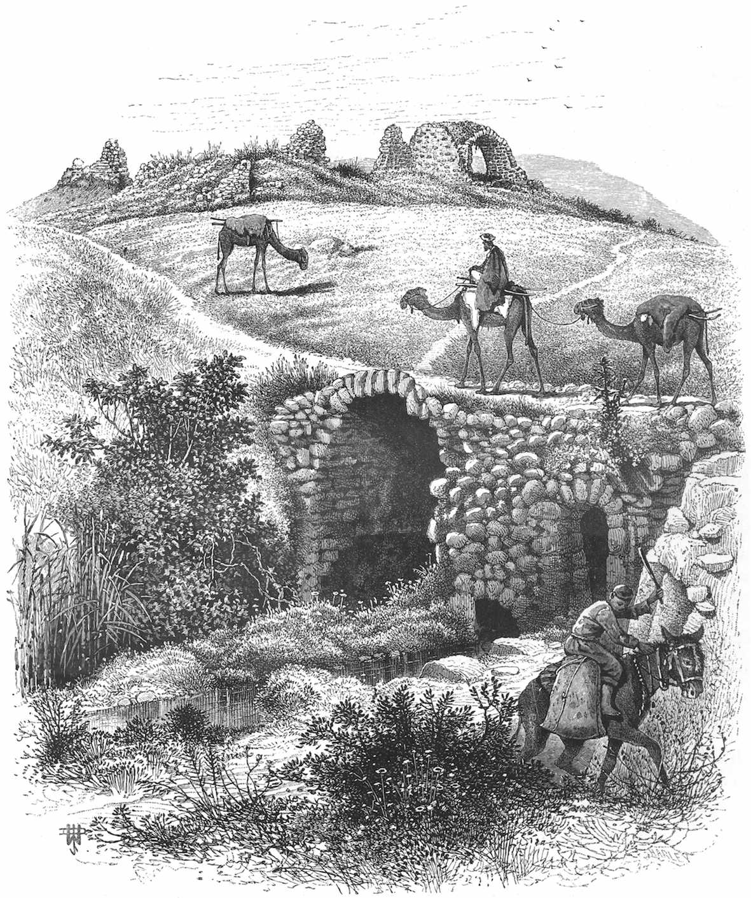

אַמְתַּחַת ’amtàḥat – sack, donkey-pack
Semantic Fields:
Transport
Author(s):
Eric Peels
First published: 2011-03-24
Last update: 2025-05-30 (Marten van Dam)
Citation: Eric Peels, אַמְתַּחַת ’amtàḥat – sack, donkey-pack,
Semantics of Ancient Hebrew Database (sahd-online.com), 2011 (update: 2025)
(WORK IN PROGRESS)
Introduction
Grammatical type: noun fem.
Occurrences: 15x HB (15/0/0); 0x Sir; 0x Qum; 0x Inscr. (Total: 15)
- Torah: Gen 42:27, Gen 42:28, Gen 43:12, Gen 43:18, Gen 43:21 (2x), Gen 43:22, Gen 43:23, Gen 44:1 (2x), Gen 44:2, Gen 44:8, Gen 44:11 (2x), Gen 44:12.
Ketiv/ Qere: none.
1. Root and Comparative Material
A.1 Root. It is questionable whether etymological research helps us to understand the term אַמְתַּחַת much better. Because the word occurs exclusively in the Joseph narrative, one might suppose that it is an Egyptian loan word. However, no Egyptian etymology has been proposed thus far. A derivation from the Hebrew preposition תַּחַת (‘das Wort bez. ein Gefäss, welches oft zum Reiten benützt wird, so dass es unter dem Reiter sich befindet’1) failed to get any support. Greenfield 1965 connected אַמְתַּחַת with an Assyrian verb matāḫu, ‘to bear, carry, lift up’.2 Consequently the word אַמְתַּחַת would not mean ‘sack’, but ‘load, burden, pack’ (this was taken over by HAHAT: ‘Sack, besser Ladung, Last’3). This might also explain the rendering of the word by טוענא ‘load, burden’ in Tg and Pesh (see Ancient Versions). However, Greenfields etymological and comparative philological argument in itself is inconclusive because it does not explain the parallelism between אַמְתַּחַת, כְּלִי and שַׂק in 42:25, 27, 35; 43:11, 12 and 44:1.
More promising is the long-standing derivation from the Hebrew verb מתח, ‘to stretch, spread out’ which occurs once in Isa 40:22 in parallelism with נטה. In Mishnaic Hebrew it is used frequently (see below). For the prosthetic א, cf. BL, 487; Klein, CEDHL, 37. The following cognates may be mentioned here:
A.2 Akkadian. matāḫu, ‘to carry, transport ... to pickup, lift’.5
A.3 Ugaritic. Del Olmo Lete: ‘a measure of length (?)’.6 However, De Moor proposed to connect Ugaritic mṯpdm and mtḥm with Hebrew → מִשְׁפְּּתַיִם and אַמְתַּחַת respectively in the sense of ‘donkey-packs’.7 In Ugaritic these words are used metaphorically in the sense of layered ‘stretches’ of geological formations.8
A.4 Postbiblical Hebrew. Levy: Qal ‘ausdehnen, ausspannen’;9 Jastrow: Qal ‘to extend, stretch’.10
A.5 Jewish Aramaic. Levy: Peal ‘ausdehnen, ausspannen’;11 Jastrow: ‘Peal to extend, stretch’;12 מִיתּוּחַ ‘stretching’;13 מִתְחָא ‘extension’; מְתַחְתָּא ‘stretching’. Sokoloff: Peal ‘to pull, stretch, elongate’;14 מְתָחְתָּא ‘stretching’;15 Sokoloff: Peal ‘to stretch’.16
A.6 Samaritan Aramaic. Tal: מתח ‘spreading out’.17
A.7 Syriac. Payne Smith: metaḥ Peal ‘to stretch out, extend, prolong’, metāḥā ‘stretching out’, etc.18
A.8 Classical Arabic. mataḥa ‘to draw, extend’.19
A.9 Ethiopic. Geez matḥa ‘to be thin’.20
2. Formal Characteristics
[Discussion will be added later.]
3. Syntagmatics
[Discussion will be added later.]
4. Ancient Versions
a. Septuagint (LXX) and other Greek versions (αʹ, σʹ, θʹ):
* μάρσιππος, ‘bag’, ‘pouch’:21 LXX all instances.
b. Peshitta (Pesh):
* ܛܥܢܐ (ṭaʿnā), ‘load, burden, package’: all instances.22
c. Targum (Tg):
* טוּעַן, ‘load, burden’: all instances in all the Targumim.
d. Samaritan Targum (TgSmr):
* חדה:23 all instances. The meaning of the Aramaic noun is disputed. Z. Ben Hayyim's suggestion that חדה
derives from from אחד, ‘to hold, contain’, is better discarded.24
CHECK:
Tal, A Dictionary of Samaritan Aramaic, 2 vols., Leiden: Brill, 2000 (2 versies: verschillende vertaingen?)
Abraham Tal, The Samaritan Targum of the Pentateuch
e. Vulgate (Vg):
saccus, ‘sack’: Gen 42:27, 28; 43:18, 21 (2x); 44:1-12 [6x];
sacculus, ‘little bag’: Gen 43:12, 21, 23;
* marsuppium (graecism, used in Prov 1:14 to render כִּיס, ‘bag’), ‘pouch’: Gen 43:22.
5. Lexical/Semantic Fields
[Discussion will be added later.]
6. Exegesis
6.1 Literal Use
A.1 The use of אַמְתַּחַת is confined to three chapters (Gen 42-44) of the Joseph narrative. In Gen 42 and 43 it denotes, together with the terms → כְּלִי and → שַׂק, the sacks for the transport of victuals that are lashed to a (pack)-ass (חֲמׂור). When he opens the sack (שַׂק פתח in 42:27, אַמְתַּחַת פתח in 43:21) to fetch fodder (מִסְפּּׂוא) for his ass, one of Joseph's brothers discovers to his dismay the money (כֶּסֶף) he had paid for the grain in his אַמְתַּחַת (so 42:27; according to 43:21 all the brothers). Joseph had ordered to put (שׂים 42:25; 43:22, cf. נתן 43:23) the money surreptiously back into the sacks, as he did later with his own beaker (→ גָּבִיעַ; 44:2). It is stipulated explicitly that the money, or the pouch with money (→ צְרׂור, 42:35), is found ‘in the upper part of the sack’ ( אַמְתַּחַת בְּפִי, cf. 42:27, 35; 43:21; 44:1, 8, 11). According to 44:1 an אַמְתַּחַת was usually filled with food (אֹכֶל) which in this particular case must be understood to mean ‘grain’ (cf. 42:10; 43:2, 20; 44:25; the words בָּר, שֶׁבֶר and אֹכֶל in Gen 42-44 are apparently synonyms, as observed by Redford 1970, 173). The sacks are filled (מלא, 42:25; 44:1) with grain or emptied (ריק Hi., 42:35), they are loaded (נשׂא, 42:26, cf. עמס, 44:13 which LXX elucidates by adding μάρσιππος, ‘sack, bag’) or unloaded (ירד, 44:11). Nowhere the material of which these sacks were made has been specified.
A.2 In the scholarly literature there is discussion about the exact relation between the various terms used in Gen 42-43. In 42:25, 35 the money is put back into (שׁוב Hi.) a שַׂק. 42:27 relates how Joseph's brother finds the money in the upper part of his אַמְתַּחַת when he opens the שַׂק. In the parallel verses 43:18 and 43:21 it is stated that the money was put back (שׁוב Hi.) into the אַמְתַּחַת, c.q. that the brothers find the money when their אַמְתַּחַת is opened. How should this variation be evaluated? Several attempts have been made to distinguish sharply between the terms אַמְתַּחַת, כְּלִי and שַׂק in Gen 42-43.
A.3 At a previous stage of research scholars tried to solve the problem with the help of literary criticism by attributing אַמְתַּחַת to the Yahwist, and שַׂק to the Elohist.27 This necessitated taking 42:27-28 as a Yahwistic intrusion in the Elohistic chapter Gen 42.28 This solution fails to convince, mainly because of the parallel use of the two terms in 42:27.29 Rather than by invoking source criticism, the ostensible tension between 42:27, 42:35 and 43:21 can be resolved by paying attention to rhetorical strategy.30
A.4 A totally different interpretation has been given by Jacob 2000. In his view כְּלִי in 42:25 and 43:11 specifically denotes the containers (‘Behältnisse’) in which the grain was stored, שַׂק in 42:25, 35 would relate exclusively to the fodder-sack (‘Futtersack’) for the donkeys, whereas אַמְתַּחַת would denote the baggage/pack of the asses in general. In this manner it would be possible to delineate the semantic content of the three terms precisely. However, this proposal flounders on the circumstance that in 42:27 (see also 43:21) שַׂק and אַמְתַּחַת are obviously parallel concepts, as כְּלִי and אַמְתַּחַת are in 42:25 and 44:1. Therefore it seems best to agree with Soggin 1997: Man beachte die drei verschiedenen Wörter für ‘Sack’: kelî, wörtlich ‘Behälter [im allgemeinen]’, śaq, das übliche, und das seltene ʾametaẖat. Dies weist nicht auf verschiedene Quellen hin, wie man glaubte, sondern auf den reichen Wortschatz des Erzählers.
A.5 In the chapters under consideration we are dealing with a variation of idiom to describe the same objects: the sacks of grain or fodder which were attached to the pack animals.31 The medieval Jewish exegete Nahmanides describes the אַמְתַּחַת as ‘a big sack (גדול שׂק) having two sides (צדדין) which in the language of the Talmud is called מטראתא’. The latter is a Greek loan word (μετρητής) which in this instance designates ‘a double sack’.32
6.2 Figurative Use
A.1 Not attested in Biblical Hebrew.
6.3 Pictorial Material
A.1 A good drawing of the type of sack described above is found in Wilson32:

A.2 See also the photographs in Avitzur and Bolen.34
6.4 Archeology
A.1 In Egypt grain was distributed in sacks.35 [Further text will be added later.]
7. Conclusion
A.1 The אַמְתַּחַת seems to be a sack for storing grain which was extended (מתח) like a piece of cloth and folded over the back of an ass by way of pack-saddle, hanging down both sides of the animal. Such saddles are also attested in Mesopotamian sources.36 At the ends the sack was tied shut.37 This explanation is supported by the context in which it balances כְּלִי ‘container’, and שַׂק ‘sack’, and also by the etymological cognates of the word, by several renderings in the ancient versions and by the interpretation offered by the medieval exegete Nahmanides. Although its material is not specified in the Bible, there is reason to suppose it was woven from black goat's hair.38 Exactly such a double sack made of goat's hair was used for the transport of grain on donkeys in Mesopotamia. It was called a patnu or zurzu there.39 Probably the אַמְתַּחַת did not differ greatly from the → מִשְׁפְּּתַיִם and → שְׁפַתַּיִם.
Bibliography
For the abbreviations see the List of Abbreviations.
R. Alter, The Art of Biblical Narrative, New York 1981, 137-40
W. Bacher, ‘Etymologisirende Wörtererklärungen’, ZAW 5 (1885), 151
W. Bacher, ‘Salomon Ibn Parchon's hebräisches Wörterbuch’, ZAW 11 (1891), 59
Dalman, AuS, Bd 3, 198; Bd. 7, 246
BDB, 607: ‘sack’
Klein, CEDHL, 37
CHALOT, 22: ‘sack (oth.: load)’
M. Cohen (ed.), הכתר גדולות מקראות, Genesis, vol. 2, Jerusalem 1999, 135
Alonso Schökel, DBHE, 62: ‘Saco, costal, talega’
DCH, vol. 1, 332: ‘sack’
R. de Hoop, Genesis in its Literary and Historical Context (OTS, 39), Leiden 1999, 153-6
J.C. de Moor, ‘Donkey-Packs and Geology’, UF 13 (1981), 303-4
J.C. de Moor, ‘Ugaritic Smalltalk’, UF 17 (1985), 219-23 (221)
J.G. Dercksen, ‘Sattel’, RLA. Bd. 12, Lief. 1/2, Berlin 2009, 90-93
K. Elliger, Deuterojesaja (BK, 11/1), 1978, 84, n. 3
GB, 52: ‘Sack’
J.C. Greenfield, ‘The Etymology of אַמְתַּחַת’, ZAW 77 (1965), 90-92
H. Gunkel, Genesis (HKAT), Göttingen 21902, 396
HAHAT, 79: ‘Sack’
HALAT, 79: ‘Sack, besser Ladung, Last’
V.P. Hamilton, Genesis (NICOT), Grand Rapids 1995, 529
HAWAT, 22: ‘Sack’
HCHAT, 11: ‘Getreidesack’
P. Heinisch, Genesis (HSAT), Bonn 1930, 381
B. Jacob, Das Buch Genesis, Stuttgart 22000, 772-3
KBL, 67: ‘Sack, sack’
C.F. Keil, Genesis (BCAT), Leipzig 21866, 270
B.J. Kemp, ‘Food for an Egyptian City: Tell el-Amarna’, in: R. Luff, P. Rowley-Conwy (eds), Whether Environmental Archaeology?, Oxford 1994, 133-53
LHA, 67: ‘saccus frumentarius’
MHH, 55: שק
NIDOT, vol. 1, 451
D.B. Redford, A Study of the Biblical Story of Joseph (Genesis 37-50) (VT.S, 20), Leiden 1970, 46, 173-4, 252
Salonen, Hausgeräte, Bd. 1, 188-90
F. Schwally, ‘Miscellen’, ZAW 11 (1891), 173
J. Skinner, Genesis (ICC), Edinburgh 21930, 477
J.A. Soggin, Das Buch Genesis: Kommentar, Darmstadt 1997, 486
M. Sternberg, The Poetics of Biblical Narrative, Bloomington 1985, 298
Loewenstamm, Blau, TLB, vol. 1, 234 ‘Bag, sack’
Gesenius, Roediger, TPC, 831: ‘saccus frumentarius’
TWAT, Bd. 7, 850-1
K.R. Veenhof, Aspects of Old Assyrian Trade and its Terminology, Leiden 1972, 8
C. Westermann, Genesis (BK, 1/3), Neukirchen 1982, 118-9
G.B. Winer, Lexicon manuale hebraicum et chaldaicum in Veteris Testamenti Libros, Lipsiae 1828, 587: ‘saccus’.
-
So Bacher 1885. ↩
-
cf. CAD M/1, 403-4. ↩
-
HAHAT, 79. ↩
-
CAD M/1, 403-5. ↩
-
Del Olmo Lete, Sanmartín, DULAT, vol. 2, 599. ↩
-
De Moor 1981 and 1985. ↩
-
See also De Hoop 1999. ↩
-
Levy, WTM, Bd. 3, 295. ↩
-
Jastrow, DTT, 861. ↩
-
Levy, CWT, Bd. 3, 295. ↩
-
Jastrow, DTT, 861. ↩
-
Jastrow, DTT, 780. ↩
-
Sokoloff, DJBA, 719. ↩
-
Sokoloff, DJBA, 720. ↩
-
Sokoloff, DJPA, 336. ↩
-
Tal, DSA, 492. ↩
-
Payne Smith (Margoliouth), CSD, 314. ↩
-
Lane, AEL, 2688; Dozy, SDA, t. 2, 575. ↩
-
Leslau, CDG, 371. ↩
-
GELS, 441; LSJ, 1081. ↩
-
Payne Smith, CSD, 180. Sokoloff, SLB, 544: ‘sack’ in Gen 43:21. ↩
-
Tal, DSA, 320. ↩
-
Greenfield 1965, 90, n. 2: ‘The Samaritan Targum's עדאה for אמתחת is difficult. Prof. Z. Ben-Hayyim has suggested to me orally that this word is from אחד "to hold, contain״ and עדאה means "container".’ ↩
-
cf. TWAT, Bd. 7, 851. ↩
-
So e.g. Schwally 1891; Gunkel 1902; Skinner 1930. ↩
-
The circumstance that the LXX reads μάρσιππος twice here must be attributed to harmonisation; so Westermann 1982, 118. ↩
-
See, for example, Westermann 1982, 118-9; Sternberg 1985; Alter 1981. ↩
-
So already Keil 1866 and Dalman, AuS, Bd 3, 198; Bd. 7, 246. ↩
-
cf. Cohen 1999; Sokolof, DJBA, 661. ↩
-
Wilson, PPSE, vol. 2, 24, lower right corner. ↩
-
Avitzur, 189-91 and Bolen, PLBL, tb060503203. ↩
-
Kemp 1994. ↩
-
Dercksen 2009, 92. ↩
-
cf. Elliger 1978; see also Bacher 1891: ‘ אַמְתַּחַת, der Sack, der nur so gefüllt oder geleert werden kann, indem man ihn zieht, ausdehnt’. ↩
-
Dalman, AuS, Bd. 3, 198. ↩
-
cf. Salonen, Hausgeräte, Bd. 1, 188-90; Veenhof 1972, 8. ↩